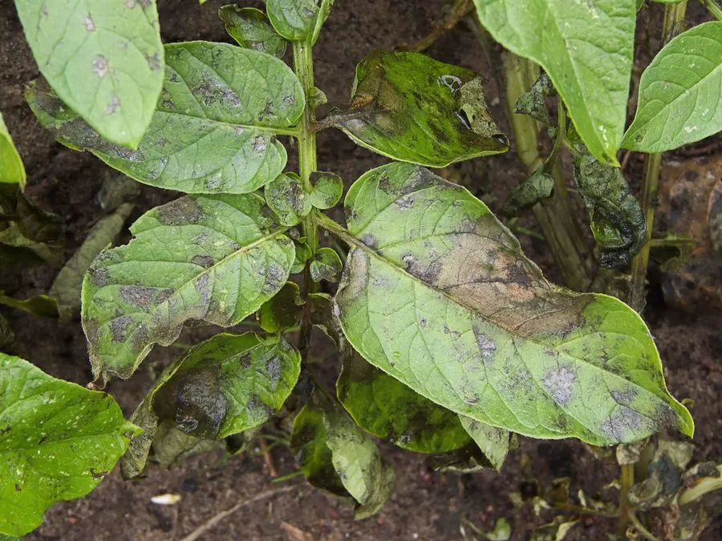

真菌 · 真菌界
致病疫霉 Phytophthora infestans

引起马铃薯晚疫病的卵菌，19 世纪曾导致爱尔兰大饥荒，至今仍是马铃薯和番茄生产中最具威胁的病害之一。
- 分类
- 门卵菌门纲卵菌纲目霜霉目科霜霉科属疫霉属
- 栖息环境
- 马铃薯和番茄的叶片、茎和块茎，冷凉潮湿时易流行
- 地理分布
- 全球马铃薯和番茄产区，中国各产区均有发生
- 保护级别
- 暂无评估（植物病原菌，非保护对象）
物种志
致病疫霉是卵菌门霜霉目的植物病原菌，虽在历史上被归入真菌，但现代分类将其归入卵菌，与硅藻和褐藻关系更近。它的菌丝无隔膜，孢子囊梗从气孔伸出，产生柠檬形的孢子囊，借风雨传播；在适宜条件下，孢子囊释放游动孢子侵染寄主。
致病疫霉是马铃薯和番茄的毁灭性病原菌，1845 年它引发的马铃薯晚疫病席卷爱尔兰，导致大饥荒和大量人口死亡与移民。如今该病仍是全球马铃薯生产中最具威胁的病害之一，叶片出现水渍状病斑，块茎腐烂。防治以选用抗病品种、种薯消毒、合理轮作和雨后及时喷药为主，同时加强田间病情监测，带病种薯是病害远距离传播的重要途径。
形态与习性
- 分类卵菌门霜霉目霜霉科疫霉属，并非真正的真菌
- 菌丝无隔膜，孢子囊梗从气孔伸出
- 孢子柠檬形孢子囊，可释放游动孢子
- 寄主马铃薯和番茄
- 病害晚疫病，叶片水渍状病斑，块茎腐烂
- 防控抗病品种、种薯消毒、合理轮作和雨后喷药
趣味知识
- 致病疫霉在分类上属于卵菌，不是真正的真菌。
- 1845 年它引发的马铃薯晚疫病导致爱尔兰大饥荒。
- 它至今仍是马铃薯和番茄生产中最具威胁的病害之一。